Jono of Rage 2
Streets of Rage 2 (Sega Megadrive/Genesis) ROM hack that replaces
characters with my brother and friends. Sprites captured and
rotoscoped from full motion video. This is a physical release that
runs on real hardware, and comes with everything an authentic Japanese
Megadrive game would have. Box, manual, registration card, and
cartridge.
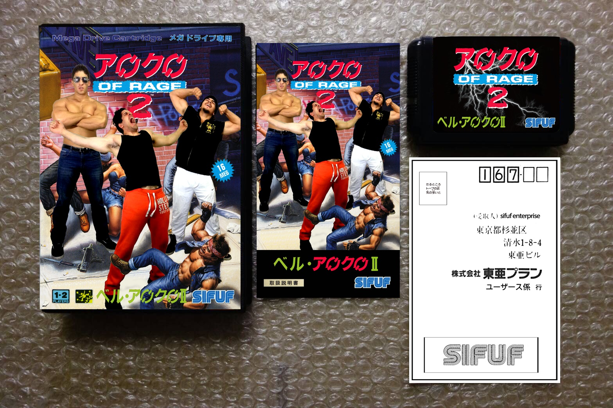
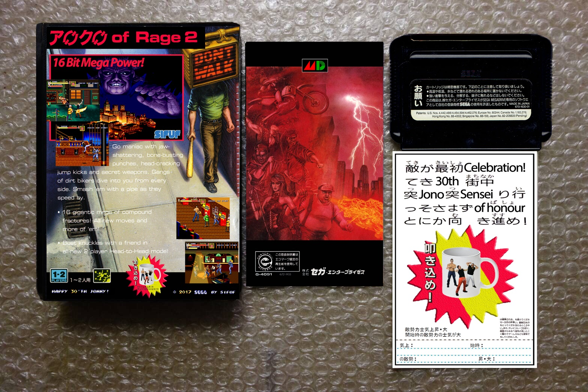
I defined the moveset in sketch form, green-screen captured the boys
performing, and then built a high resolution character library. I
removed as many redundant frames as possible, but kept the count high
enough to not significantly reduce the fluidity of the raw footage (as
I am also using them in an high res original PC game of mine called
'Chaos').
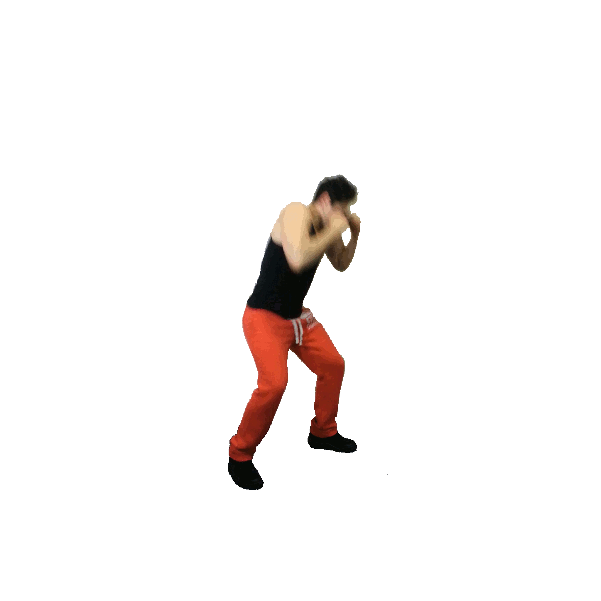
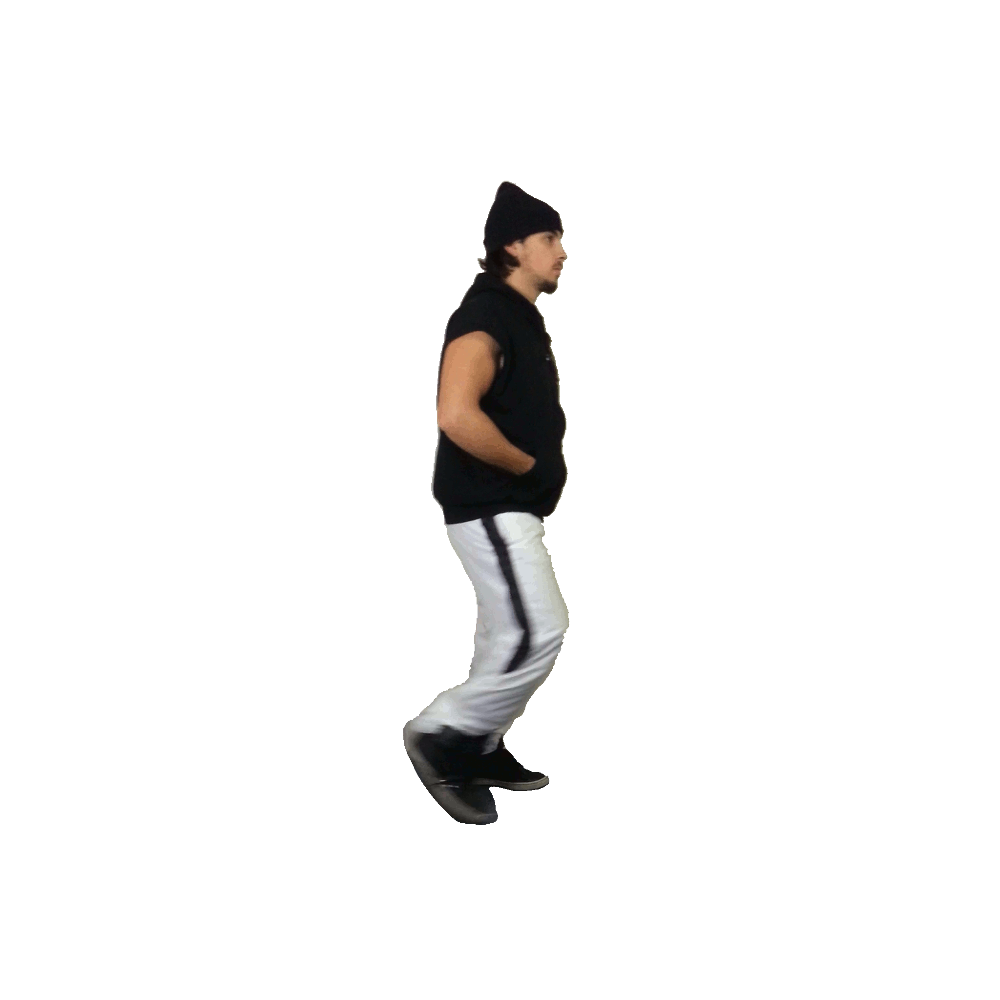
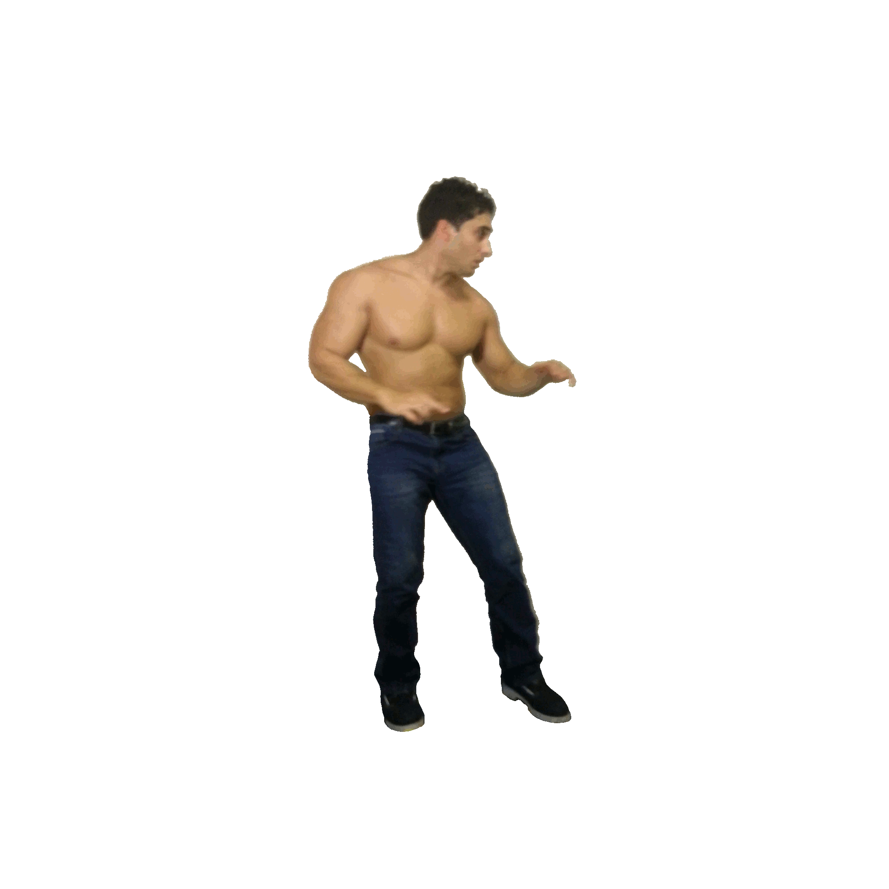
But for this retro project, I created sprite sheets of only the key
frames, reduced and hand finished to the Megadrive's 64 colour pallet
(512 available colours)
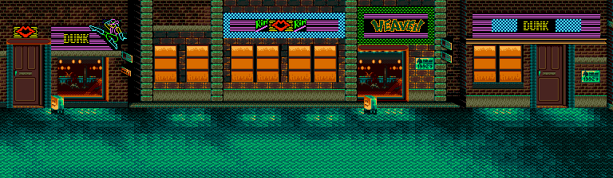
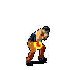
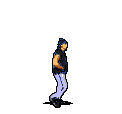
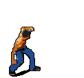
Burning UV eprom to build physical cartridge
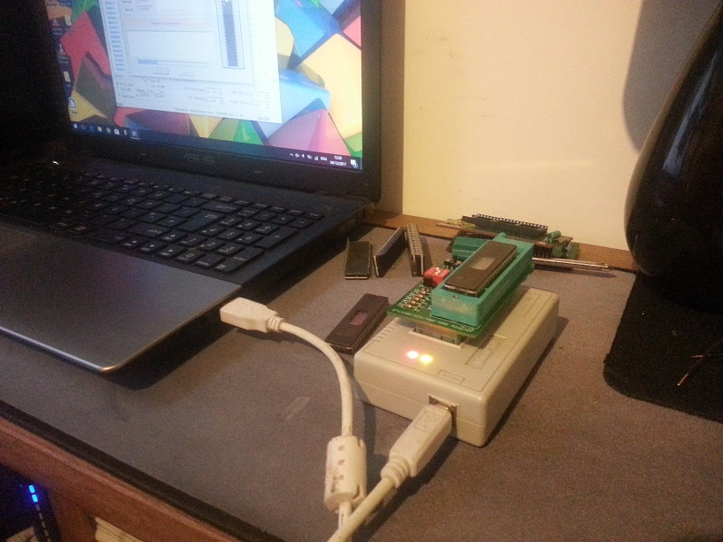
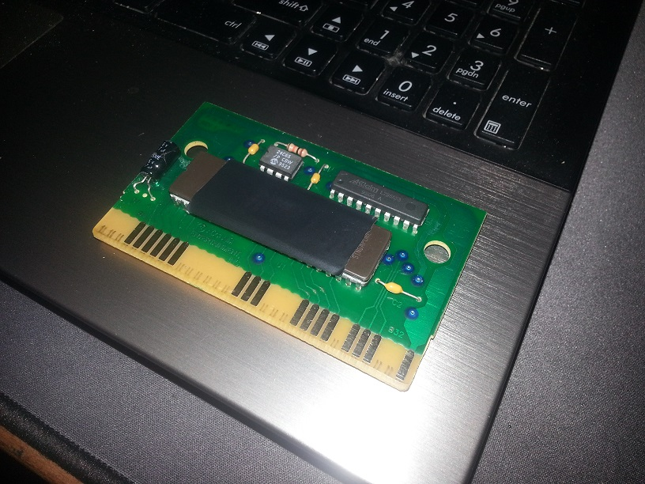
Running on Real harware Mega drive (Japanese 60Hz RGB)
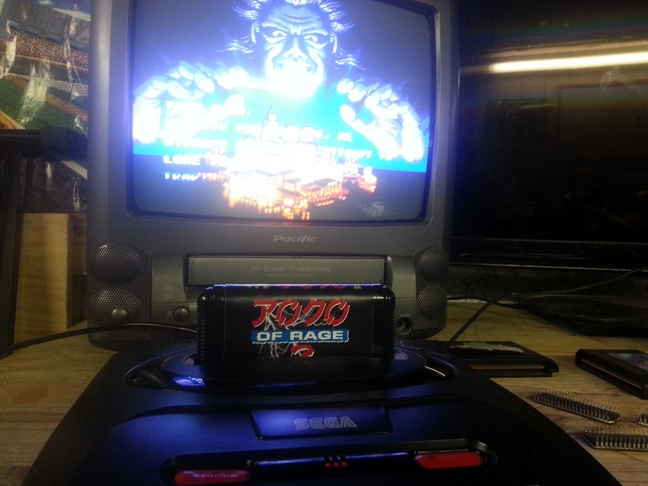
Profesionally produced high gloss printed Covers, manuals, Cards, and
cart labels
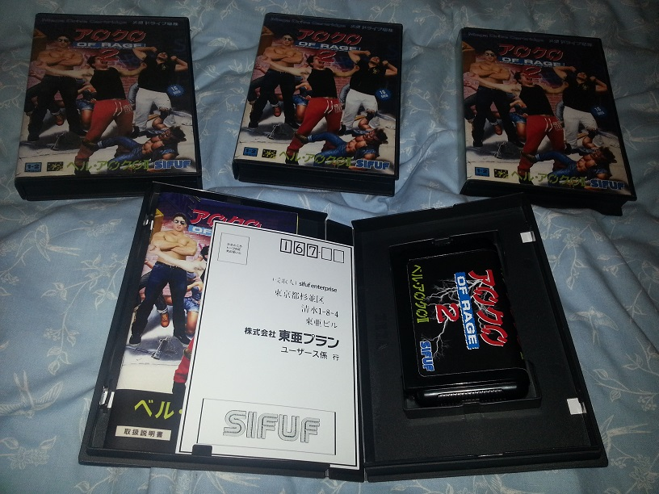
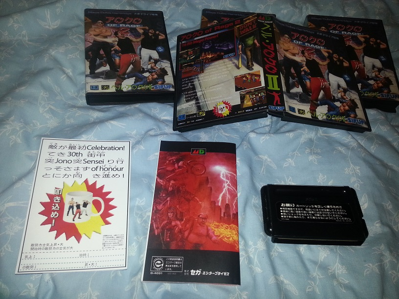
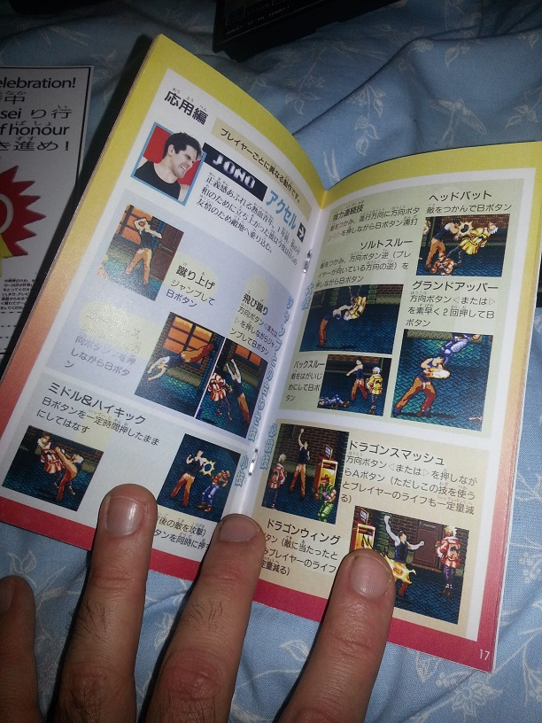
Only 4 copies exist!